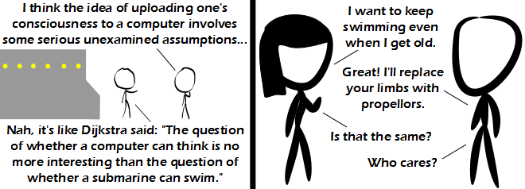

Comic JK 743
When I Feel Like It
⇤
<
?
>
⇥

⇤
<
?
>
⇥
Forum
.
RSS
.
Digg
.
Facebook
.
Reddit
.
Twitter
.
Stumbleupon
Enter your thoughts on number 743 here. Please, no spamming, trolling, phreaking, or uploading before you can swim. >so the choice is: to think or swim... ? >>+1 >>> +2 >>Do we have a trader in our midst? >>-1 for misspelling traitor >>>-2 for thinking he was talking about traitorous dogs and not a metaphor trader. I, for one, do not want computers to ever become sentient. It's hard enough for me to have a conversation with a human. I don't want that unpleasant experience every time I look at my watch! >Developing sapient AI isn't going to affect simple devices. I have a watch that has a design that dates back to wound springs, the only significant change in it is stylistic modifications, glow-in-the-dark hands, a date display, and replacing the wound spring with a battery. And when we're talking about AI thinking, the word we want is sapient, not sentient: your dog is sentient - if you kick it, it will either whine or bite your foot off, so it clearly feels pain. A robot with sufficiently developed AI will be self aware/intelligent/sapient, but having the ability to detect pain is not guaranteed - that would require some sort of load sensor net on its outer casing and the programming necessary to have the reaction to such loading model that of human nerves. A simple-Turing-complete sapient AI would not consider sensing pain to be desirable, most likely, so it would likely avoid turning them on even if it had them. Complex-Turing is less predictable. >> What the fuck is Complex-Turing machine? :D > I disagree on the pain sense. Pain sense has a very good function in any body; if I had a choice, I'd enable pain sense, but disable the associated unpleasantness. >> The question is not whether a computer can be sapient but whether a conscious being can be a computer. >>>Come to think of it, sentience has to do with comprehending distress, not pain sensation, which kinda renders my earlier distinction invalid - it would be difficult for a sapient creature to be incapable of distress - even insects start acting alarmed if you pull a couple of legs off (and yes, I realize this is a somewhat disturbing means of making my point) >>>>Pain is unpleasant in the hope that you won't do whatever it was that caused the pain again >>>>>Unless, of course, you get off on that sort of thing. I wonder if Kapor considers IQ 140 high or low. “I think, therefore I am.”—Descartes. Dualism, baby! >"AI think, therefore AI am" >>am, is , or are?? Just be a swimming computer